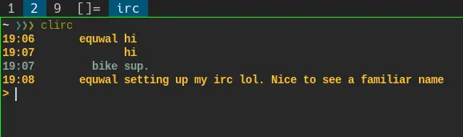

Look at how beautiful IRC can be(?)

Get
ii
and
lchat
running on your machine
together. This is the guide. For up-to-date code and improvements go
to the git repo. https://github.com/equwal/ii-lchat-metapackage
Go install ii with the SSL patch added. This will run as a local server that makes files named in and out for lchat to use.
Go install lchat. It uses the suckless library grapheme that you will need to install and link up.
Go to services and edit/install the file. You will need to register with nickserv on liberachat. Install it on your machine. If you are using a service that isn’t in there, or you find it doesn’t work, please contribute.
Copy irc-connect and lchat-connect to your path. Modify as needed.
Make aliases for lchat-connect.
# example
alias lispirc='/home/jose/src/sh/lchat-connect "$HOME/irc" "irc.libera.chat" "#lisp"'#!/bin/sh
TIMEOUT=10
CHANNELSWAIT=1
# IRC client connector script
# Usage: irc-connect <server> <nick> <pass> <dir> [channel1] [channel2] ...
SERVER="$1"
NICK="$2"
PASS="$3"
DIR="$4"
shift 4
ii -s "$SERVER" -n "$NICK" -i "$DIR" -e &
II_PID=$!
sleep "$TIMEOUT"
echo "IDENTIFY $NICK $PASS" >"$DIR"/"$SERVER"/nickerv/in
sleep $CHANNELSWAIT
# Join all provided channels
for channel in "$@"; do
echo "/j $channel" >"$DIR"/"$SERVER"/in
sleep "$CHANNELSWAIT"
done
wait $II_PID#!/bin/sh
# lchat connector script
# Usage: lchat-connect <dir> <server> <channel>
DIR="$1"
SERVER="$2"
CHANNEL="$3"
lchat -a "$DIR"/"$SERVER"/"$CHANNEL"#!/sbin/openrc-run
name="lispirc"
description="IRC client for #lisp on irc.libera.chat"
command="/home/jose/src/sh/irc-connect"
command_args="(irc.libera.chat) <YOUR NICKSERV IDENT> <YOUR NICKSERV PASSWORD> <IRC FILES PATH> CHANNELS CHANNELS CHANNELS (eg. \#lisp)"
command_user="<USER>"
pidfile="/run/${RC_SVCNAME}.pid"
command_background="yes"
depend() {
need net
after logger
}
stop() {
local pid=$(cat "$pidfile")
ebegin "Stopping $name"
kill "$pid" 2>/dev/null
rm -f "$pidfile"
eend $?
}SSL using socat or some other external program
ii on your VPS for bouncing
other init systems
Using an init system for many instances of simple programs · irc relay · suckless · sic